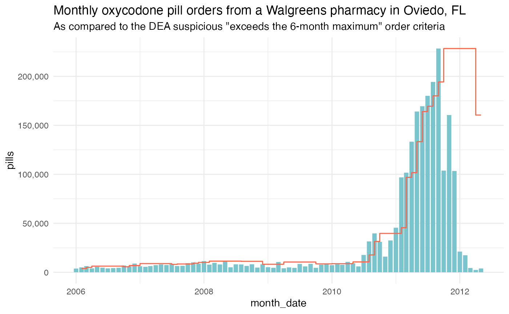

Suspicious orders detection
Source:vignettes/suspicious-order-detection.Rmd
suspicious-order-detection.RmdThe DEA is purposefully vague in how it defines what is a suspicious amount of opioids ordered by a buyer.
But in a recent lawsuit, a former DEA agent described five methodologies:
- Maximum Monthly, Trailing 6 Month Threshold
- 2x Trailing 12 Month average
- Extraordinary Order Method – 3x Trailing 12 Month Average
- Maximum 8,000 Dosage Units Monthly
- Maximum Daily Dosage Units
This vignette will show how to analyze one pharamacy’s ordering patterns to identify suspicious orders using the first two listed methodologies.
We’re going to look at a Walgreens pharmacy in Oviedo that was part of a half dozen pharmacies in Florida sanctioned by the DEA in 2011 for suspicious activity. The Post later determined at the height of the opioid crisis, Walgreens handled nearly one in five of the most addictive opioids.
Investigate
First, we need to find the BUYER_DEA_NO for that store. All we know of this specific pharmacy is the city and the address: Oviedo and Lockwood Boulevard.
Let’s load up the data on buyers. The city of Oviedo is in Seminole County, Florida. Let’s search based on that.
pharm <- buyer_addresses(county = "Seminole", state="FL", key="WaPo")
glimpse(pharm)#> Rows: 468
#> Columns: 10
#> $ BUYER_DEA_NO <chr> "AT8818467", "AM8437786", "AA1455852", "AA7378917",…
#> $ BUYER_BUS_ACT <chr> "RETAIL PHARMACY", "PRACTITIONER-DW/100", "CHAIN PH…
#> $ BUYER_NAME <chr> "TRU-VALU DRUGS OF SANFORD", "MURRAY, GWINN MD", "A…
#> $ BUYER_ADDRESS1 <chr> "503 E FIRST ST", "1444 LEXINGTON GREEN LANE", "200…
#> $ BUYER_CITY <chr> "SANFORD", "SANFORD", "LONGWOOD", "ALTAMONTE SPRING…
#> $ BUYER_STATE <chr> "FL", "FL", "FL", "FL", "FL", "FL", "FL", "FL", "FL…
#> $ BUYER_ZIP <int> 32771, 32771, 32750, 32701, 32779, 32701, 32771, 32…
#> $ BUYER_COUNTY <chr> "SEMINOLE", "SEMINOLE", "SEMINOLE", "SEMINOLE", "SE…
#> $ BUYER_ADDL_CO_INFO <chr> NA, NA, "DBA SAV-ON PHARMACY", "SAV-ON PHARMACY #33…
#> $ BUYER_ADDRESS2 <chr> NA, NA, NA, NA, NA, "SUITE 1100", NA, "1401 W SEMIN…Okay, we have 468 pharmacies in Seminole County. Are there any on Lockwood?
| BUYER_DEA_NO | BUYER_BUS_ACT | BUYER_NAME | BUYER_ADDRESS1 | BUYER_CITY | BUYER_STATE | BUYER_ZIP | BUYER_COUNTY | BUYER_ADDL_CO_INFO | BUYER_ADDRESS2 |
|---|---|---|---|---|---|---|---|---|---|
| BW4443735 | CHAIN PHARMACY | WINN-DIXIE PHARMACY #2271 | 1021 LOCKWOOD BLVD | OVIEDO | FL | 32765 | SEMINOLE | NA | NA |
| BW8487438 | CHAIN PHARMACY | WALGREEN CO. | 785 LOCKWOOD BLVD | OVIEDO | FL | 32765 | SEMINOLE | DBA: WALGREENS # 06997 | NA |
| FW4552091 | CHAIN PHARMACY | WALGREEN CO. | 785 LOCKWOOD BLVD. | OVIEDO | FL | 32765 | SEMINOLE | WALGREENS #06997 | NA |
| BC5288407 | CHAIN PHARMACY | HOLIDAY CVS, L.L.C. | 1030 LOCKWOOD BLVD | OVIEDO | FL | 32765 | SEMINOLE | DBA: CVS/PHARMACY # 05150 | NA |
Okay, we have four. And there are two that specifically Walgreens.
It’s either BW8487438 or FW4552091. They both have the same address.
pharmacy_raw(buyer_dea_no = "FW4552091", key = "WaPo")
returns an error from the ARCOS api, so BW8487438 must be
the correct BUYER_DEA__NO.
pharm1 <- pharmacy_raw(buyer_dea_no = "BW8487438", key = "WaPo")
glimpse(pharm1)#> Rows: 4,102
#> Columns: 42
#> $ REPORTER_DEA_NO <chr> "RW0277752", "RW0277752", "RW0277752", "RW027775…
#> $ REPORTER_BUS_ACT <chr> "DISTRIBUTOR", "DISTRIBUTOR", "DISTRIBUTOR", "DI…
#> $ REPORTER_NAME <chr> "WALGREEN CO", "WALGREEN CO", "WALGREEN CO", "WA…
#> $ REPORTER_ADDL_CO_INFO <chr> "null", "null", "null", "null", "null", "null", …
#> $ REPORTER_ADDRESS1 <chr> "15998 WALGREENS DRIVE", "15998 WALGREENS DRIVE"…
#> $ REPORTER_ADDRESS2 <chr> "null", "null", "null", "null", "null", "null", …
#> $ REPORTER_CITY <chr> "JUPITER", "JUPITER", "JUPITER", "JUPITER", "JUP…
#> $ REPORTER_STATE <chr> "FL", "FL", "FL", "FL", "FL", "FL", "FL", "FL", …
#> $ REPORTER_ZIP <int> 33478, 33478, 33478, 33478, 33478, 33478, 33478,…
#> $ REPORTER_COUNTY <chr> "PALM BEACH", "PALM BEACH", "PALM BEACH", "PALM …
#> $ BUYER_DEA_NO <chr> "BW8487438", "BW8487438", "BW8487438", "BW848743…
#> $ BUYER_BUS_ACT <chr> "CHAIN PHARMACY", "CHAIN PHARMACY", "CHAIN PHARM…
#> $ BUYER_NAME <chr> "WALGREEN CO.", "WALGREEN CO.", "WALGREEN CO.", …
#> $ BUYER_ADDL_CO_INFO <chr> "DBA: WALGREENS # 06997", "DBA: WALGREENS # 0699…
#> $ BUYER_ADDRESS1 <chr> "785 LOCKWOOD BLVD", "785 LOCKWOOD BLVD", "785 L…
#> $ BUYER_ADDRESS2 <chr> "null", "null", "null", "null", "null", "null", …
#> $ BUYER_CITY <chr> "OVIEDO", "OVIEDO", "OVIEDO", "OVIEDO", "OVIEDO"…
#> $ BUYER_STATE <chr> "FL", "FL", "FL", "FL", "FL", "FL", "FL", "FL", …
#> $ BUYER_ZIP <int> 32765, 32765, 32765, 32765, 32765, 32765, 32765,…
#> $ BUYER_COUNTY <chr> "SEMINOLE", "SEMINOLE", "SEMINOLE", "SEMINOLE", …
#> $ TRANSACTION_CODE <chr> "S", "S", "S", "S", "S", "S", "S", "S", "S", "S"…
#> $ DRUG_CODE <int> 9143, 9193, 9193, 9143, 9193, 9143, 9143, 9193, …
#> $ NDC_NO <chr> "60951070570", "00406036101", "00074197314", "52…
#> $ DRUG_NAME <chr> "OXYCODONE", "HYDROCODONE", "HYDROCODONE", "OXYC…
#> $ QUANTITY <int> 2, 1, 1, 1, 1, 1, 1, 1, 2, 1, 1, 1, 1, 1, 1, 1, …
#> $ UNIT <chr> "null", "null", "null", "null", "null", "null", …
#> $ ACTION_INDICATOR <chr> "null", "null", "null", "null", "null", "null", …
#> $ ORDER_FORM_NO <chr> "056218050", "null", "null", "064004085", "null"…
#> $ CORRECTION_NO <chr> "null", "null", "null", "null", "null", "null", …
#> $ STRENGTH <chr> "0000", "0000", "0000", "0000", "0000", "0000", …
#> $ TRANSACTION_DATE <chr> "01112006", "01132006", "03242006", "09202006", …
#> $ CALC_BASE_WT_IN_GM <dbl> 7.1720, 0.6054, 0.4540, 1.3447, 0.6054, 0.4034, …
#> $ DOSAGE_UNIT <int> 200, 100, 100, 100, 100, 100, 100, 500, 200, 100…
#> $ TRANSACTION_ID <int> 164527, 22329, 25472, 165557, 17990, 165342, 159…
#> $ Product_Name <chr> "OXYCOD.HCL ER TABS;40MG/TAB", "HYDROCODO.BIT 10…
#> $ Ingredient_Name <chr> "OXYCODONE HYDROCHLORIDE", "HYDROCODONE BITARTRA…
#> $ Measure <chr> "TAB", "TAB", "TAB", "TAB", "TAB", "TAB", "TAB",…
#> $ MME_Conversion_Factor <dbl> 1.5, 1.0, 1.0, 1.5, 1.0, 1.5, 1.5, 1.0, 1.0, 1.5…
#> $ Combined_Labeler_Name <chr> "Par Pharmaceutical", "SpecGx LLC", "AbbVie Inc.…
#> $ Revised_Company_Name <chr> "Endo Pharmaceuticals, Inc.", "Mallinckrodt", "A…
#> $ Reporter_family <chr> "Walgreen Co", "Walgreen Co", "Walgreen Co", "Wa…
#> $ dos_str <chr> "40.0", "10.0", "7.5", "15.0", "10.0", "null", "…These are the raw results from this one pharmacy. More than 4,000 orders.
Let’s narrow this list down to only Oxycodone and by month.
# consolidating by month
pharm_monthly <- pharm1 %>%
# setting transactio code to S because those are purchases
filter(TRANSACTION_CODE=="S") %>%
filter(DRUG_NAME=="OXYCODONE") %>%
mutate(TRANSACTION_DATE=mdy(TRANSACTION_DATE)) %>%
mutate(year=year(TRANSACTION_DATE),
month=month(TRANSACTION_DATE),
month_date=mdy(paste0(month, "/1/", year))) %>%
group_by(year, month, month_date) %>%
summarize(pills=sum(DOSAGE_UNIT))
#> `summarise()` has grouped output by 'year', 'month'. You can override using the
#> `.groups` argument.Maximum Monthly, Trailing 6 Month Threshold
We use the lag() function to pull six months of pill
orders prior and then keep the largest order from that list.
# Slices out the max orders within a window of 6 months prior to the current month
monthly_drug_six <- pharm_monthly %>%
ungroup() %>%
arrange(month_date) %>%
mutate(lag1=lag(pills, 1),
lag2=lag(pills, 2),
lag3=lag(pills, 3),
lag4=lag(pills, 4),
lag5=lag(pills, 5),
lag6=lag(pills, 6)
) %>%
pivot_longer(cols=5:10, names_to="lag", values_to="total") %>%
group_by(year, month, pills, month_date) %>%
arrange(desc(total)) %>%
slice(1) %>%
ungroup()
# creating a column that indicates if a monthly dosage exceeds the 6 month max prior
monthly_drug_six <- monthly_drug_six %>%
mutate(six_max_flag=case_when(
pills > total ~ T,
TRUE ~ F))
#monthly_drug_six$trail_six_max_flag <- ifelse(monthly_drug_six$pills > monthly_drug_six$total, 1, 0)
ggplot(monthly_drug_six, aes(x=month_date, y=pills)) +
geom_col(fill="cadetblue3") +
geom_step(aes(x=month_date, y=total, fill="Maximum 6 month order"), color="tomato", opacity=.6)+
scale_y_continuous(label=comma) +
theme_minimal() +
labs(title="Monthly oxycodone pill orders from a Walgreens pharmacy in Oviedo, FL",
subtitle='As compared to the DEA suspicious "exceeds the 6-month maximum" order criteria')
How often did this store’s orders exceed the 6-month max order?
table(monthly_drug_six$six_max_flag)
#>
#> FALSE TRUE
#> 54 232x Trailing 12 Month average
Next, we’ll determing what double the trailing 12-month average is.
# we'll use the rollmean() function from the zoo package
rolling <- pharm_monthly %>%
ungroup() %>%
arrange(month_date) %>%
mutate(avg_pills = zoo::rollmean(pills, k = 12, fill = NA, align="right")) %>%
mutate(avg_pills_2x=avg_pills*2) %>%
mutate(roll_flag_2x=case_when(
avg_pills_2x<pills ~ T,
TRUE ~ F
))
# CALCULATE ROLLING AVERAGE HERE
ggplot(rolling, aes(x=month_date, y=pills)) +
geom_col(fill="cadetblue3") +
geom_step(aes(x=month_date, y=avg_pills_2x, fill="Double the 12 month rolling average"), direction="mid",color="tomato", opacity=.06) +
scale_y_continuous(label=comma) +
theme_minimal() +
labs(title="Monthly oxycodone pill orders from a Walgreens pharmacy in Oviedo, FL",
subtitle='As compared to the DEA suspicious "double the 12-month rolling average" order criteria')
How often did this store’s orders exceed double the 12-month rolling average?
table(rolling$roll_flag_2x)
#>
#> FALSE TRUE
#> 66 11